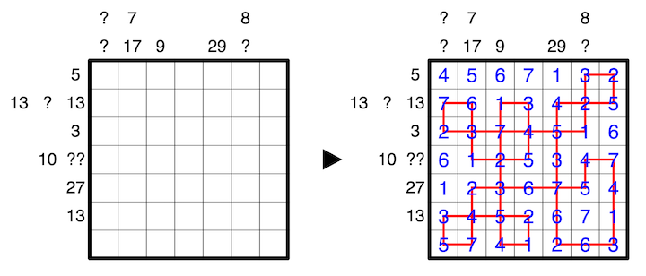

Draw a loop that travels orthogonally between the centers of some cells in the grid. The loop may cross itself, but wherever it crosses, both ends must travel straight; a cross is never two right angles touching.
Clues to the left of rows indicate the sum of numbers on horizontal segments of the loop in that row, in the correct order. Clues above columns indicate the sum of numbers on vertical segments of the loop in that column, in the correct order. A question mark may replace any number from 0 to 9, but no clue may have a leading zero.
A number on a cross either counts as double its value, or as 0, for all sums that number contributes to. That is, a number must not simultaneously contribute double its value towards a column clue while contributing 0 towards a row clue, or vice versa.
A 1-7 example is provided:
